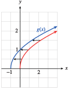
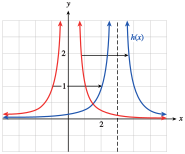
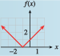

Subsection 4.2 Horizontal Translations
Now consider the graphs of
shown below. Compared with the graph of the basic function \(y = x^2\text{,}\) the graph of \(f (x) = (x + 2)^2\) is shifted two units to the left, as shown by the arrows.

You can see why this happens by studying the function values in the table.
Locate a particular \(y\)-value for \(y = x^2\text{,}\) say, \(y = 4\text{.}\) You must move two units to the left in the table to find the same \(y\)-value for \(f (x)\text{,}\) as shown by the arrow. In fact, each \(y\)-value for \(f (x)\) occurs two units to the left when compared to the same \(y\)-value for \(y = x^2\text{.}\)


Similarly, the graph of \(g(x) = (x - 2)^2\) is shifted two units to the right compared to the graph of \(y = x^2\text{.}\) In the table for \(g\text{,}\) each \(y\)-value for \(g(x)\) occurs two units to the right of the same \(y\)-value for \(y = x^2\text{.}\) In general, we have the following principle.
Horizontal Translations.
Compared with the graph of \(y = f(x)\text{,}\)
- The graph of \(~~y = f(x + h),~ ~(h \gt 0)~~\) is shifted \(h\) units to the left.
- The graph of \(~~y = f(x - h),~ ~(h \gt 0)~~\) is shifted \(h\) units to the right.
Note 4.2.5.
At first, the direction of a horizontal translation may seem counterintuitive. Look again at the tables above to help you see how the shift occurs.
Example 4.2.6.
Graph the following functions.
- \(\displaystyle g(x) =\sqrt{x + 1}\)
- \(\displaystyle h(x) = \dfrac{1}{(x - 3)^2}\)
-
Consider the table of values for the function.
\(x\) \(-1\) \(0\) \(1\) \(2\) \(3\) \(y=\sqrt{x}\) undefined \(0\) \(1\) \(1.414\) \(1.732\) \(y=\sqrt{x+1}\) \(0\) \(1\) \(1.414\) \(1.732\) \(2\) The table shows that each \(y\)-value for \(g(x)\) occurs one unit to the left of the same \(y\)-value for the graph of \(y=\sqrt{x}\text{.}\) Consequently, each point on the graph of \(y = g(x)\) is shifted one unit to the left of \(y =\sqrt{x}\text{,}\) as shown at right.
 -
Consider the table of values for the function.
\(x\) \(-1\) \(0\) \(1\) \(2\) \(3\) \(4\) \(y=\dfrac{1}{x}\) \(1\) undefined \(1\) \(\dfrac{1}{4}\) \(\dfrac{1}{9}\) \(\dfrac{1}{16}\) \(y=\dfrac{1}{(x-3)^2}\) \(\dfrac{1}{16}\) \(\dfrac{1}{9}\) \(\dfrac{1}{4}\) \(1\) undefined \(1\) The table shows that each \(y\)-value for \(h(x)\) occurs three units to the right of the same \(y\)-value for the graph of \(y =\dfrac{1}{x^2}\text{.}\) Consequently, each point on the graph of \(y = h(x)\) is shifted three units to the right of \(y =\dfrac{1}{x^2}\text{,}\) as shown at right.

Checkpoint 4.2.7.
Graph the function \(f (x) = \abs{x + 1}\text{.}\)
How is the graph of \(f\) different from the graph of \(y = \abs{x}\text{?}\)
- 
Translate \(y =\abs{x}\) one unit left.
Example 4.2.8.
The function \(N = f(p)\) graphed at right gives the number of people who have a given eye pressure level \(p\) from a sample of 100 people with healthy eyes, and the function \(g\) gives the number of people with pressure level \(p\) in a sample of 100 glaucoma patients.

- Write a formula for \(g\) as a transformation of \(f\text{.}\)
- For what pressure readings could a doctor be fairly certain that a patient has glaucoma?
- The graph of \(g\) is translated \(10\) units to the right of \(f\text{,}\) so \(g(p) = f (p - 10)\text{.}\)
- Pressure readings above \(40\) are a strong indication of glaucoma. Readings between \(10\) and \(40\) cannot conclusively distinguish healthy eyes from those with glaucoma.
Checkpoint 4.2.9.
The function \(C = f (t)\) shown below gives the caffeine level in Delbert's bloodstream at time \(t\) hours after he drinks a cup of coffee, and \(g(t)\) gives the caffeine level in Francine's bloodstream. Write a formula for \(g\) in terms of \(f\text{,}\) and explain what it tells you about Delbert and Francine.

\(g(t) = f(t - 3)\text{.}\) Francine drank her coffee \(3\) hours after Delbert drank his.
Example 4.2.10.
Graph \(~~f(x) = (x + 4)^3 + 2\)
We identify the basic graph from the structure of the formula for \(f (x)\text{.}\) In this case, the basic graph is \(y = x^3\text{,}\) so we begin by locating a few points on that graph, say, \((0,0),~(1,1),\) and \((-1,-1).\)
We'll perform the translations separately, following the order of operations. First, we sketch a graph of \(y = (x + 4)^3\) by shifting each point on the basic graph four units to the left. We then move each point up two units to obtain the graph of \(f(x) = (x + 4)^3 + 2\text{.}\) All three graphs are shown below.
Checkpoint 4.2.11.
- Graph the function \(f(x) = \abs{x - 2} - 1\text{.}\)
- How is the graph of \(f\) different from the graph of \(y=\abs{x}\text{?}\)

Translate \(y =\abs{x}\) one unit down and two units right.